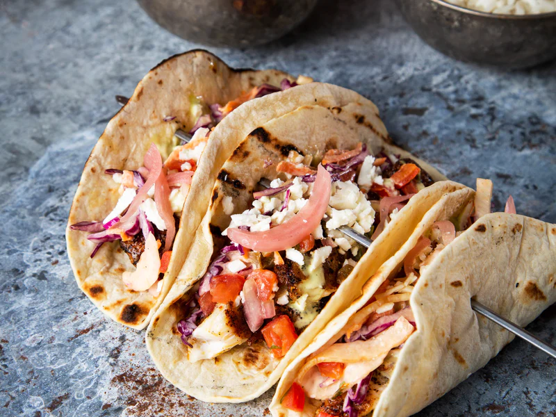

Tacos de Programación

Description: Embark on a coding adventure with "Programming Tacos," a whimsical recipe that fuses programming references with delicious taco goodness.
Ingredients:
- 8 programming tortillas
- 1 cup of algorithmic avocado salsa
- 1 pound of binary-spiced meat or tech-savvy tofu
- 2 cups of debugged cheese medley
- 1 cup of recursive refried beans
- Syntax seasoning: garlic, cumin, paprika, salt, and pepper
Instructions:
- Preheat your "Digital Skillet" to 375°F (190°C).
- Sauté binary-spiced meat or tech-savvy tofu in a "Function Pan."
- Combine "Recursive Refried Beans" with syntax seasoning.
- Assembly: Place a spoonful of algorithmic avocado salsa on each programming tortilla.
- Top with a portion of meat/tofu, followed by a sprinkle of debugged cheese.
- Add another layer: tortilla, salsa, and "Recursive Refried Beans."
- Repeat: tortilla, salsa, meat/tofu, and debugged cheese.
- Finish with a final tortilla, salsa, and extra debugged cheese.
- Cook in your "Digital Skillet" until cheese melts.
- Allow your "Programming Tacos" to rest briefly before serving.
Savor the flavors of coding and cuisine combined in these delightful "Tacos de Programación" – a fusion that's sure to satisfy your taste buds and programming spirit.